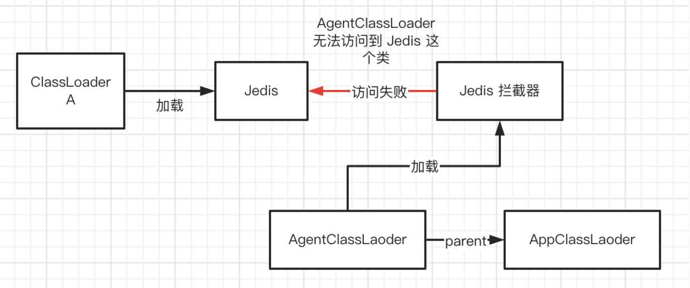
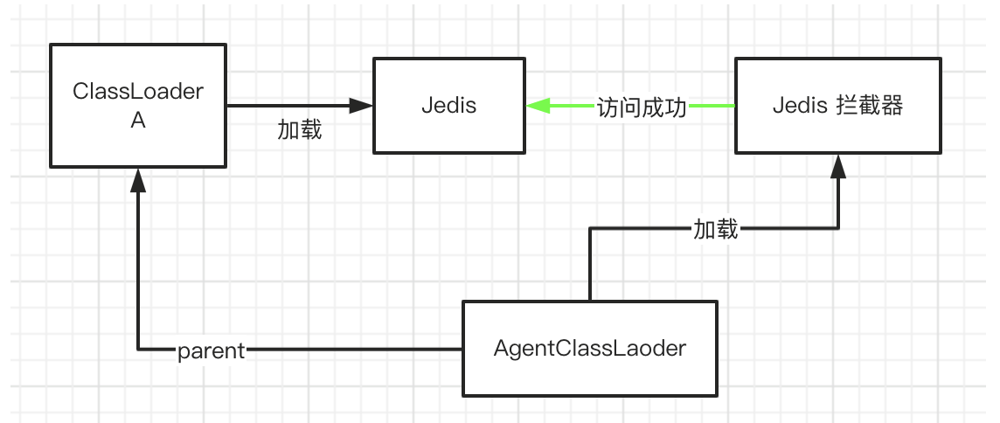
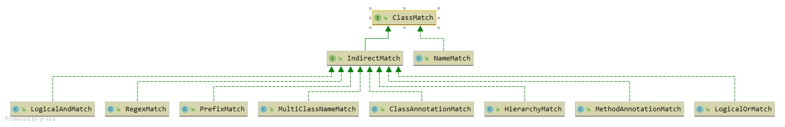
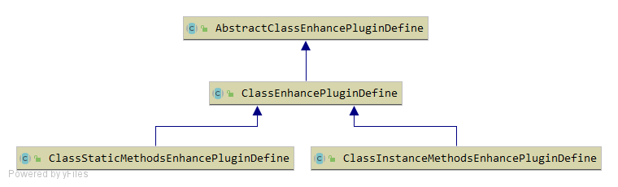
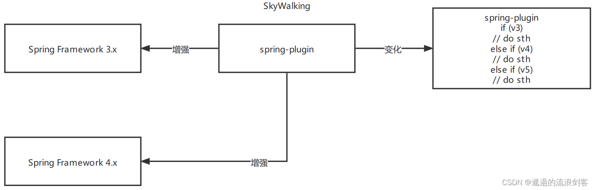
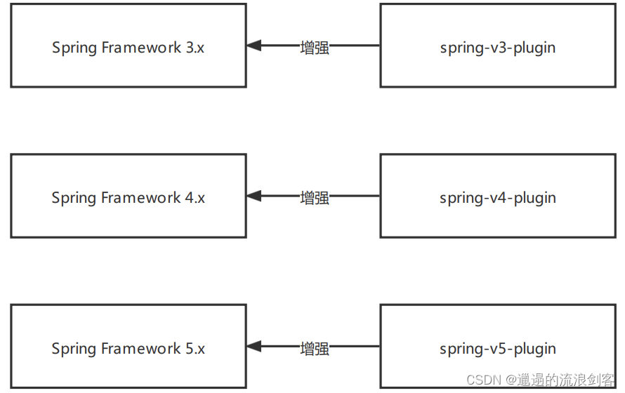

Skywalking Agent 启动流程分析
org.apache.skywalking.apm.agent.SkyWalkingAgent是Skywalking Agent的启动入口。premain方法的主要流程：
- 调用
SnifferConfigInitializer.initializeCoreConfig加载配置 - 使用
PluginBootstrap的loadPlugins方法加载插件，并创建PluginFinder实例 - 创建
Transformer，构建Byte Buddy的AgentBuilder，并与Instrumentation关联 - 调用
ServiceManager.boot方法，初始化BootService
public static void premain(String agentArgs, Instrumentation instrumentation) throws PluginException { |
加载配置
SnifferConfigInitializer类负责完成Agent配置的初始化。initializeCoreConfig方法完成核心配置的初始化，大致流程：
- 创建一个名为
AGENT_SETTINGS的Properties实例，用于暂存从各处加载的配置参数 - 从配置文件中加载参数到
AGENT_SETTINGS- 如果指定了
skywalking_config环境变量，则从skywalking_config环境变量指定的路径加载 - 否则从
/config/agent.config路径加载，这是一个相对于agent.jar文件的相对路径private static InputStreamReader loadConfig() throws AgentPackageNotFoundException, ConfigNotFoundException {
String specifiedConfigPath = System.getProperty(SPECIFIED_CONFIG_PATH);
File configFile = StringUtil.isEmpty(specifiedConfigPath) ? new File(
AgentPackagePath.getPath(), DEFAULT_CONFIG_FILE_NAME) : new File(specifiedConfigPath);
if (configFile.exists() && configFile.isFile()) {
try {
LOGGER.info("Config file found in {}.", configFile);
return new InputStreamReader(new FileInputStream(configFile), StandardCharsets.UTF_8);
} catch (FileNotFoundException e) {
throw new ConfigNotFoundException("Failed to load agent.config", e);
}
}
throw new ConfigNotFoundException("Failed to load agent.config.");
}
- 如果指定了
- 从环境变量中加载参数到
AGENT_SETTINGS- 只加载key以
skywalking.开头的环境变量，如Config.Agent.SERVICE_NAME配置，在agent.config中的参数key是agent.service_name，环境变量的key则为skywalking.agent.service_name - 这一步加载的参数会覆盖上一步已加载的参数
private static void overrideConfigBySystemProp() {
Properties systemProperties = System.getProperties();
for (final Map.Entry<Object, Object> prop : systemProperties.entrySet()) {
String key = prop.getKey().toString();
if (key.startsWith(ENV_KEY_PREFIX)) {
String realKey = key.substring(ENV_KEY_PREFIX.length());
AGENT_SETTINGS.put(realKey, prop.getValue());
}
}
}
- 只加载key以
- 从命令行参数中加载参数到
AGENT_SETTINGS- 命令行传参为
-javaagent:<agent.jar>=<args>，参数格式类似key1=value1,key2=value2 - 这一步加载参数同样会覆盖前两步已加载的参数
......
agentOptions = StringUtil.trim(agentOptions, ',');
if (!StringUtil.isEmpty(agentOptions)) {
try {
agentOptions = agentOptions.trim();
LOGGER.info("Agent options is {}.", agentOptions);
overrideConfigByAgentOptions(agentOptions);
} catch (Exception e) {
LOGGER.error(e, "Failed to parse the agent options, val is {}.", agentOptions);
}
}
......
- 命令行传参为
- 使用已加载的参数
AGENT_SETTINGS初始化Config类，这一步是通过调用ConfigInitializer.initialize方法完成- 初始化是通过反射逐个为每个属性设置值，仅会处理
public和static修饰的属性 - 获取参数key时会统一转换为小写，因此前3步中设置的参数key需要注意必须为小写，否则不会被使用
- 处理时会根据参数的数据结构分不同情况处理，如：Map、Collection、Object等
Config中的配置如果是String类型，那么会有一个@Lenght注解设置字符串的最大长度，初始化时已加载的参数value如果过长会被截断
- 初始化是通过反射逐个为每个属性设置值，仅会处理
- 校验
Config配置是否正确Config.Agent.SERVICE_NAME不能为空Config.Collector.BACKEND_SERVICE不能为空
- 设置
IS_INIT_COMPLETED变量为true，表示初始化完成
加载插件
PluginBootstrap
PluginBootstrap类负责完成插件的加载。主要流程：
- 调用
AgentClassLoader.initDefaultLoader完成默认AgentClassLoader类加载器的初始化public static void initDefaultLoader() throws AgentPackageNotFoundException {
if (DEFAULT_LOADER == null) {
synchronized (AgentClassLoader.class) {
if (DEFAULT_LOADER == null) {
DEFAULT_LOADER = new AgentClassLoader(PluginBootstrap.class.getClassLoader());
}
}
}
} - 调用
PluginResourcesResolver.getResources加载插件类路径下的所有skywalking-plugin.def文件，注意这里使用的是默认AgentClassLoader类加载器，原因后面会说public List<URL> getResources() {
......
urls = AgentClassLoader.getDefault().getResources("skywalking-plugin.def");
......
} - 调用
PluginCfg.load方法加载并解析第2步得到的skywalking-plugin.def文件，- 每个插件的信息被封装为一个
PluginDefine对象。skywalking-plugin.def文件的内容是一个=分隔的字符串，key表示插件名，对应PluginDefine中的name属性，value表示插件类路径，对应PluginDefine中的defineClass属性httpclient-3.x=org.apache.skywalking.apm.plugin.httpclient.v3.define.HttpClientInstrumentation
PluginSelector会对上一步加载到的所有插件做一次过滤，如果在Config.Plugin.EXCLUDE_PLUGINS参数中设置了插件名，这一步会将其排除掉void load(InputStream input) throws IOException {
try {
BufferedReader reader = new BufferedReader(new InputStreamReader(input));
String pluginDefine;
while ((pluginDefine = reader.readLine()) != null) {
try {
if (pluginDefine.trim().length() == 0 || pluginDefine.startsWith("#")) {
continue;
}
PluginDefine plugin = PluginDefine.build(pluginDefine);
pluginClassList.add(plugin);
} catch (IllegalPluginDefineException e) {
LOGGER.error(e, "Failed to format plugin({}) define.", pluginDefine);
}
}
pluginClassList = pluginSelector.select(pluginClassList);
} finally {
input.close();
}
}
- 每个插件的信息被封装为一个
- 遍历上一步加载到的插件列表，通过反射方式创建插件，注意此时使用的仍然是默认的
AgentClassLoader类加载器......
for (PluginDefine pluginDefine : pluginClassList) {
try {
LOGGER.debug("loading plugin class {}.", pluginDefine.getDefineClass());
AbstractClassEnhancePluginDefine plugin = (AbstractClassEnhancePluginDefine) Class.forName(pluginDefine.getDefineClass(), true, AgentClassLoader
.getDefault()).newInstance();
plugins.add(plugin);
} catch (Throwable t) {
LOGGER.error(t, "load plugin [{}] failure.", pluginDefine.getDefineClass());
}
......
}
AgentClassLoader
前文提到了默认AgentClassLoader的初始化。AgentClassLoader是Skywalking Agent实现的一个自定义类加载器，专门用于插件的类加载。
为什么需要一个自定义的类加载器呢？我们知道Skywalking Agent的初衷就是无侵入式的探针操作，应用不会显式地添加Skywalking依赖，因此应用的类加载器AppClassLoader就加载不到Skywalking的插件。
AgentClassLoader加载plugins和activations两个目录下的插件：
public AgentClassLoader(ClassLoader parent) throws AgentPackageNotFoundException { |
AgentClassLoader构造方法被调用的入口有两个，除了AgentClassLoader.initDefaultLoader方法（即前面分析的PluginBootstrap.loadPlugins方法中）有调用外，还会在InterceptorInstanceLoader.load方法中被调用。
InterceptorInstanceLoader用于加载插件拦截器。拦截器interceptor是用于实现增强逻辑的实际载体，拦截器类似于AOP中的advice。
InterceptorInstanceLoader其内部使用了一个INSTANCE_CACHE变量（类型为ConcurrentHashMap）的缓存插件实例，load方法中首先会在缓存中查找，已有实例就直接返回，没有则创建一个新实例。InterceptorInstanceLoader内部同样有一个EXTEND_PLUGIN_CLASSLOADERS变量用于缓存ClassLoader，创建实例时会从缓存中查找ClassLoader，如果缓存中没有则会创建一个新的AgentClassLoader并放入缓存中。
public static <T> T load(String className, |
有一个细节很有意思，InterceptorInstanceLoader内部缓存的key是用className和targetClassLoader共同构建的，这也就意味着，同样一个插件的拦截器，会为每个targetClassLoader创建一个AgentClassLoader，其parent是targetClassLoader。哪些可能是targetClassLoader呢？比如，sun.misc.Launcher$AppClassLoader、org.springframework.boot.loader.LaunchedURLClassLoader，或者业务/第三方jar中自定义的ClassLoader。
为什么要新建一个AgentClassLoader实例而不用默认的AgentClassLoader呢？默认的AgentClassLoader的parent是AppClassLoader。考虑这样一种场景，假设Jedis是由一个自定义类加载器加载的，且插件中又访问了Jedis这个类，因为AgentClassLoader是无法访问到Jedis这个类文件的，因此只能向上查找，向上查找到AppClassLoader，肯定是查不到的，因为Jedis是自定义类加载器加载的。

而如果我们使用一个新的 AgentClassLoader，并将其 parent 设置为 Jedis 的 ClassLoader，则可以解决这个问题。

PluginFinder
PluginFinder主要实现了插件的查找。PluginFinder内部维护了nameMatchDefine、signatureMatchDefine、bootstrapClassMatchDefine几个变量，用于存储插件实例。
PluginFinder构造方法传入了一个AbstractClassEnhancePluginDefine的List，来源是PluginBootstrap.loadPlugins方法的返回。构造方法遍历插件列表依次处理：
- 调用
enchanceClass方法，返回一个ClassMatch类型的对象，表示该插件的拦截点，即要被增强的类，如果返回为空则忽略该插件 - 如果返回的是
ClassMatch的子类NameMatch，那么加入到nameMatchDefine中，否则加入到signatureMatchDefine - 如果是
Bootstrap插件，则加入到bootstrapClassMatchDefine中
public PluginFinder(List<AbstractClassEnhancePluginDefine> plugins) { |
当进行类增强时，会调用find方法查找插件，分别在nameMatchDefine和signatureMatchDefine中查找匹配到的插件并返回：
public List<AbstractClassEnhancePluginDefine> find(TypeDescription typeDescription) { |
PluginFinder中还有一个buildMatch方法，该方法会将nameMatchDefine和signatureMatchDefine中的所有插件用OR规则连起来，构成一个Byte Buddy中的ElementMatcher类型，并添加到Buyte Buddy Agent中，这样所有插件中定义的匹配点均会被Byte Buddy进行transform增强处理。
public ElementMatcher<? super TypeDescription> buildMatch() { |
ClassMatch
ClassMatch在Skywalking中表示插件的拦截点，它的类继承关系如下图所示：

整体来说分为两类，一个是直接按类名匹配的NameMatch，另一类是间接的匹配，例如用类注解匹配的ClassAnnotationMatch、按类名前缀匹配的PrefixMatch等。
AbstractClassEnhancePluginDefine
AbstractClassEnhancePluginDefine是所有插件定义的抽象父类，从其继承的子类有ClassEnhancePluginDefine、ClassStaticMethodsEnhancePluginDefine、ClassInstanceMethodsEnhancePluginDefine，它们的继承关系如下图所示。

ClassStaticMethodsEnhancePluginDefine继承自ClassEnhancePluginDefine，内部只是简单地将getConstructorsInterceptPoints方法和getInstanceMethodsInterceptPoints方法返回null，表示不对构造方法和类实例方法进行增强；同理，ClassInstanceMethodsEnhancePluginDefine中也只是简单地将getStaticMethodsInterceptPoints方法返回null，表示不对静态方法进行增强。
增强逻辑主要实现在AbstractClassEnhancePluginDefine和ClassEnhancePluginDefine中，AbstractClassEnhancePluginDefine用了模板模式，主体流程实现在父类中，将扩展点留给子类实现。
AbstractClassEnhancePluginDefine中有几个用于控制是否增强的过滤方法：
enhanceClass()：用于定义哪些类需要进行增强，返回一个ClassMatch类型。witnessClasses()：用于判断当前插件是否适用于拦截当前的类。witnessMethods()：与witnessClasses类似，同样用于判断当前插件是否使用拦截当前的类，只不过是用方法名进行判断
关于witness机制的作用后面会介绍到。
AbstractClassEnhancePluginDefine.define方法是进行类增强的入口，大致的处理流程是：
- 获取插件类名
interceptorDefineClassName和待增强的类名transformClassName - 用
WitnessFinder对witnessClasses()和witnessMethods()方法的返回再做一次过滤 - 调用
enhance方法进行增强- 调用
enhanceClass方法完成类的增强，具体实现在ClassEnhancePluginDefine中，完成类静态方法的增强 - 调用
enhanceInstance方法完成类实例的增强，具体实现在ClassEnhancePluginDefine中，完成构造方法和实例方法的增强
- 调用
- 调用
EnhanceContext.initializationStageCompleted方法，标记增强完成
public DynamicType.Builder<?> define(TypeDescription typeDescription, DynamicType.Builder<?> builder, |
插件的witness机制
/** |
witnessClasses方法的注释说明了主要用于处理类库版本演进的问题。
随着类库版本的升级，有可能插件对进行增强的逻辑会发生变化，比如可能方法名变了、或者方法参数变了。那针对不同版本的类库就需要有不同的插件处理，如果插件中版本号来判断就十分恶心，其一是版本号不太好获取，其二是有很多的if-else分支，并且后续版本升级还需要增加分支，扩展性很差。

Skywalking中的做法是为每个版本单独维护一套插件

这就带来一个问题，程序运行时如果让对应版本的插件生效？比如，现在服务使用的是Spring4，那应该只让Spring4的插件生效、忽略Spring3和Spring5的插件。
这就是witness机制所起的作用。
witnessClasses可以返回某个特定版本才有的类，比如MySQL插件就通过不同的类名来区分哪个版本的插件生效：
mysql-6.x
|
mysql-8.x
|
witnessMethods可以返回某个特定版本才有的方法，比如，dubbo插件就通过getServerContext方法的返回值来区分：
dubbo 2.7.x
|
dubbo 3.x
|
与AbstractClassEnhancePluginDefine搭配的还有另外三个拦截器接口，分别是ConstructorInterceptPoint、InstanceMethodsInterceptPoint、StaticMethodsInterceptPoint分别标识构造方法拦截器、类实例方法拦截器、类静态方法拦截器。
Transformer
SkywalkingAgent中的内部类Transformer类实现了AgentBuilder.Transformer接口的transform方法，是Byte Buddy完成类增强的入口。
private static class Transformer implements AgentBuilder.Transformer { |
当transform被Byte Buddy调用时，首先会调用PluginFinder的find方法查找待增强类所匹配的插件，然后遍历找到的插件列表，调用define方法进行增强。
加载 BootService
BootService可以看做是后台任务，随Agent启动后开始提供服务，它提供一些生命周期方法，在不同时期被Agent回调。
public interface BootService { |
ServiceManager.boot方法实现了所有BootService实现类的加载，以及prepare、startup、onComplete方法的回调。
public void boot() { |
loadAllServices方法中使用SPI技术加载所有BootService接口的实现。apm-agent-core模块的resources/META-INF/services/org.apache.skywalking.apm.agent.core.boot.BootService文件中列出了全部的BootService实现。
org.apache.skywalking.apm.agent.core.remote.TraceSegmentServiceClient |